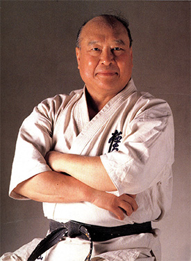

O kyokushin
Założycielem stylu był urodzony 27 lipca 1923, Koreańczyk, Choi Yeong-Eui, który po przybyciu do Japonii przybrał imię Masutatsu Oyama. Stworzona przez niego Międzynarodowa Organizacja Karate Kyokushin-kaikan (International Karate Organization Kyokushin-kaikan, w skrócie IKO) była do momentu jego śmierci w 1994 r. największą organizacją sztuk walki na świecie. Po śmierci Masutatsu Oyamy ogłoszono, że na mocy testamentu sukcesorem zmarłego i nowym liderem światowego kyokushin jest Akiyoshi Shokei Matsui. Nazwa kyokushin pochodzi od japońskich słów:
kyoku – biegun, ekstremum, najwyższa ranga; shin – prawda, prawdziwość, rzeczywistość.
Słowo "kyokushin" tłumaczone jest najczęściej jako ekstremum prawdy, dążenie do poznania prawdy, zaś nazwa Kyoku-shin-kai oznacza stowarzyszenie na rzecz poznania ostatecznej (najwyższej) prawdy. W wolnym tłumaczeniu również droga ku prawdzie. KARATE KYOKUSHIN to wszechstronny system wychowania i rozwoju psychofizycznego oparty o sztukę walki, będący syntezą wschodniej tradycji i nowoczesnych metod treningowych. W sensie technicznym KARATE KYOKUSHIN to umiejętność walki oparta głównie o uderzenia i kopnięcia, ale do treningów wprowadzane są także chwyty. Nasi adepci są szkoleni zarówno w kierunku walki w przepisach sportowych jak i samoobrony - walki bez ograniczeń.
źródło www.ukskaratewesola.pl/o-kyokushin